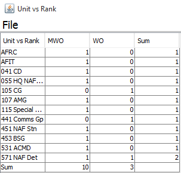

A Summary Report created using 2 axis (X and Y axis). The Report displays summation data gotten from plotting X-axis data against Y -axis data.
For example a summary report may plot Rank (X-axis) against Unit (Y-axis). In this case the report will display the number of personnel of each rank in each Unit.
Example of a Summary Report (Rank vs Unit)

Example of a Summary Report
Each cell in a summary report displays a number which is the sum of plotting X-axis data against Y-axis data.
If Rank is plotted against Unit and the first Rank is AWO while the first Unit is HQ NAF, then clicking on the intersecting cell will display the details of the number of AWOs in HQ NAF.
Related: